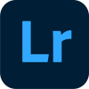

Photo
Який режим вибрати?
Розберемо режими які існують на камерах Режими камер можуть значно полегшити або розширити можливості фотографування залежно від ситуації. Це огляд основних режимів, які ви можете знайти в більшості цифрових камер:
-
Автоматичний режим (Auto Mode)
- У цьому режимі камера самостійно визначає всі налаштування (витримку, діафрагму, ISO тощо), щоб забезпечити найкращу експозицію. Це зручно для початківців або в ситуаціях, коли потрібно швидко зробити знімок.
-
Програмний режим (P - Program Mode)
- Камера автоматично визначає експозицію, але користувач має можливість змінювати деякі параметри, такі як баланс білого, ISO та інші. Це дає більше контролю порівняно з автоматичним режимом.
-
Пріоритет витримки (S або Tv - Shutter Priority)
- Фотограф задає витримку, а камера автоматично визначає інші параметри, щоб забезпечити правильну експозицію. Цей режим корисний при зйомці об'єктів, що швидко рухаються, де важливо заморозити рух або показати рух розмито.
-
Пріоритет діафрагми (A або Av - Aperture Priority)
- Фотограф задає діафрагму, а камера автоматично визначає інші параметри. Використовується для контролю глибини різкості, що важливо при портретній зйомці або пейзажах.
-
Ручний режим (M - Manual Mode)
- Фотограф самостійно налаштовує всі параметри: витримку, діафрагму, ISO тощо. Це дає повний контроль над зйомкою і дозволяє отримувати саме ті результати, які заплановані
-
Сцени (Scene Modes)
- Це попередньо налаштовані режими для певних ситуацій, як-от портрет, спорт, макро, нічний режим та інші. Камера автоматично налаштовує параметри під конкретну сцену.
-
Панорамний режим (Panorama Mode)
- Цей режим дозволяє знімати серію знімків, які потім автоматично зшиваються в одну панорамну фотографію.
-
HDR режим (High Dynamic Range)
- Камера робить кілька знімків з різною експозицією і поєднує їх в одну фотографію з високим динамічним діапазоном, що дозволяє зберегти деталі як у світлих, так і в темних областях.
-
Творчі режими (Creative Modes)
- Ці режими дозволяють застосовувати різні фільтри та ефекти безпосередньо під час зйомки, такі як чорно-білий, сепія, високий контраст і т. д.
-
Режим зйомки відео (Video Mode)
- Дозволяє знімати відео з можливістю налаштування різних параметрів, як-от частота кадрів, роздільна здатність і ISO.
-
Поради для використання різних режимів:
- Автоматичний режим підходить для швидких знімків без зайвих налаштувань.
- Пріоритет витримки використовуйте для спортивних подій або рухомих об'єктів.
- Пріоритет діафрагми підійде для портретів або створення ефекту боке.
- Ручний режим використовуйте, коли хочете повністю контролювати процес зйомки.
- Сценові режими зручно використовувати для специфічних умов, коли ви не впевнені, які налаштування обрати.
Використовуючи ці режими, ви зможете отримувати кращі фотографії, відповідно до умов зйомки та ваших творчих задумів.
Основні параметри
Розглянемо основні параметри, які впливають на якість і вигляд фотографій: ISO, витримка, діафрагма, баланс білого, фокусна відстань і експозиція.
ISO
-
ISO визначає чутливість сенсора камери до світла.
- Низьке значення ISO (100-400) використовується при достатньому освітленні (сонячний день).
- Високе значення ISO (800 і більше) використовується в умовах слабкого освітлення.
- Збільшення ISO підвищує чутливість сенсора, але також може призводити до виникнення шуму (зернистості) на знімках.
-
Як виставити параметер:
- Почніть з низького ISO (100 або 200) і підвищуйте його лише за необхідності.
Витримка
(Shutter Speed)
-
Витримка визначає, як довго затвор камери залишається відкритим
під час зйомки.
- Коротка витримка (1/1000 с або швидше) використовується для заморожування руху (спорт, швидко рухомі об'єкти).
- Довга витримка (1/60 с і більше) використовується для фотографування в умовах низького освітлення або для створення ефектів руху (наприклад, розмиття води або сліди автомобільних фар).
- Довга витримка вимагає використання штатива, щоб уникнути розмиття через тремтіння рук.
-
Як виставити параметер:
- Для статичних об'єктів використовуйте витримку 1/60 с або довше.
- Для рухомих об'єктів використовуйте коротку витримку (1/250 с або швидше).
Діафрагма
(Aperture)
-
Діафрагма визначає розмір отвору в об'єктиві, через який проходить
світло.
- Великий отвір (мале значення f/2.8, f/1.8) дозволяє більше світла і створює меншу глибину різкості (добре для портретів з розмитим фоном).
- Малий отвір (велике значення f/16, f/22) дозволяє менше світла і створює велику глибину різкості (добре для пейзажів).
-
Як виставити параметер:
- Для портретів використовуйте широку діафрагму (f/2.8 або f/1.8).
- Для пейзажів використовуйте вузьку діафрагму (f/11 або більше).
Баланс білого
(White Balance)
-
Баланс білого визначає, як камера сприймає кольори при різному
освітленні.
- Автоматичний баланс білого (AWB) намагається визначити правильний баланс автоматично.
- Ручні налаштування можуть включати опції для денного світла, тіні, хмарності, лампи розжарювання, флуоресцентного світла тощо.
-
Як виставити параметер:
- Використовуйте автоматичний баланс білого, якщо не впевнені у налаштуваннях.
- У разі специфічного освітлення встановлюйте вручну.
Фокусна відстань
(Focal Length)
-
Фокусна відстань визначає ступінь збільшення об'єкта зйомки.
- Коротка фокусна відстань (ширококутний об'єктив) дає широке поле зору і підходить для пейзажів.
- Довга фокусна відстань (телеоб'єктив) дає вузьке поле зору і підходить для зйомки віддалених об'єктів (спорт, дика природа).
-
Як виставити параметер:
- Для загальних зйомок використовуйте стандартний зум-об'єктив (18-55 мм).
- Для віддалених об'єктів використовуйте телеоб'єктив (70-200 мм).
Експозиція
(Exposure)
-
Експозиція визначає загальну кількість світла, яке потрапляє на
сенсор.
- Переекспонована фотографія буде надто світлою.
- Недоекспонована фотографія буде надто темною.
- Експозиція регулюється трьома параметрами: ISO, витримкою і діафрагмою.
-
Як виставити параметер:
- Використовуйте експозамер камери, щоб оцінити експозицію і при необхідності коригуйте її експозиційною компенсацією.
Композиція
Композиція є ключовим елементом в фотографії, який допомагає створювати візуально привабливі і гармонійні знімки. Розглянемо основні принципи композиції:
-
Правило третин (Rule of Thirds)
- Кадр ділиться на дев'ять рівних частин за допомогою двох горизонтальних і двох вертикальних ліній. Важливі елементи зображення розміщуються вздовж цих ліній або на їх перетинах, що створює більш збалансований і цікавий кадр.
-
Центральна композиція
- Основний об'єкт розміщується в центрі кадру. Це може бути ефективним для створення симетрії та фокусування уваги на головному об'єкті.
-
Золотий перетин (Golden Ratio)
- Це більш складний варіант правила третин, де композиція базується на математичному відношенні приблизно 1:1.618. Об'єкти розташовуються уздовж спіралі золотого перетину, що створює гармонійний і природний вигляд кадру.
-
Лінії і напрямки (Leading Lines)
- Використання ліній в кадрі (дороги, річки, будівлі), які ведуть очі глядача до головного об'єкта. Це додає глибини і динаміки до зображення.
-
Рамка в рамці (Frame within a Frame)
- Використання елементів сцени для створення природних рамок навколо основного об'єкта (наприклад, двері, вікна, арки). Це допомагає сфокусувати увагу на головному об'єкті і додає глибини.
-
Відкритий простір (Negative Space)
- Залишення великої кількості порожнього простору навколо головного об'єкта. Це дозволяє підкреслити важливість об'єкта і створює мінімалістичний вигляд.
-
Баланс (Balance)
- Досягнення візуальної рівноваги в кадрі. Симетричний баланс використовує однакові елементи по обидві сторони від центру, а асиметричний баланс використовує різні елементи для створення рівноваги.
-
Поради для розміщення моделей або об'єктів:
- Розміщення об'єкта на перетинах ліній правил третин робить зображення більш динамічним.
- Залучайте природні лінії і рамки для спрямування уваги на головний об'єкт.
- Експериментуйте з центральною композицією для симетричних і зосереджених кадрів.
- Використовуйте негативний простір для створення мінімалістичних знімків.
Топ-10 програм для фото обробки
-
 Adobe Photoshop
Adobe Photoshop
- Одна з найпотужніших і найпопулярніших програм для редагування фотографій, що пропонує широкий набір інструментів для ретуші, корекції кольорів, роботи з шарами і масками.
- Windows, macOS
- Платна (доступні підписки)
-
 Adobe Lightroom
- Програма спеціалізується на управлінні та обробці великих колекцій фотографій. Зручний інтерфейс для базової та розширеної корекції кольорів, налаштувань експозиції, роботи з RAW файлами.
- Windows, macOS, iOS, Android
- Платна (доступні підписки)
-
 GIMP (GNU Image Manipulation Program)
GIMP (GNU Image Manipulation Program)
- Потужна безкоштовна програма з відкритим кодом для редагування зображень, яка підтримує багато функцій, схожих на Adobe Photoshop.
- Windows, macOS, Linux
- Безкоштовна
-
 Affinity Photo
Affinity Photo
- Альтернатива Adobe Photoshop з високою продуктивністю та широким набором інструментів для редагування фотографій. Відома своїм одноразовим платежем без підписки.
- Windows, macOS, iOS
- Платна (одноразовий платіж)
-
 Capture One
Capture One
- Професійна програма для обробки фотографій з акцентом на роботу з RAW файлами. Відома своїми точними кольоровими корекціями і високою продуктивністю.
- Windows, macOS
- Платна (доступні підписки)
-
 Darktable
Darktable
- Безкоштовна програма з відкритим кодом для роботи з RAW файлами та базової обробки зображень. Є гарною альтернативою Adobe Lightroom.
- Windows, macOS, Linux
- Безкоштовна
-
 Skylum Luminar
Skylum Luminar
- Програма з інтуїтивно зрозумілим інтерфейсом, яка пропонує потужні інструменти для обробки фотографій, включаючи штучний інтелект для автоматизації багатьох процесів.
- Windows, macOS
- Платна (одноразовий платіж)
-
 Snapseed
Snapseed
- Мобільний додаток для обробки фотографій від Google, який пропонує широкий набір інструментів для корекції зображень, включаючи фільтри і точкові корекції.
- iOS, Android
- Безкоштовна
-
 Fotor
Fotor
- Онлайн-платформа та додаток для обробки фотографій, що пропонує зручні інструменти для базової корекції, фільтри та ефекти.
- Windows, macOS, iOS, Android, веб-версія
- Безкоштовна (є платні функції)
-
 Pixlr
Pixlr
- Онлайн-редактор фотографій, що пропонує широкий спектр інструментів для редагування зображень, схожих на функціональність Photoshop.
- Веб-версія, iOS, Android
- Безкоштовна (є платні функції)
Висновок
Розуміння і правильне використання режимів камери та основних
параметрів, таких як ISO, витримка, діафрагма, баланс білого, фокусна
відстань та експозиція, є ключем до створення якісних і професійних
фотографій.
Композиція, включаючи принципи правила третин, золотого перетину,
ліній і напрямків, рамки в рамці, відкритого простору та балансу,
відіграє вирішальну роль у визначенні розташування моделі чи об'єкта в
кадрі.
Практика та експерименти з цими налаштуваннями і принципами дозволять
вам вдосконалювати свої навички фотографа, створюючи візуально
привабливі і технічно досконалі знімки.
Незалежно від рівня вашої підготовки, завжди важливо продовжувати
вивчати і застосовувати ці знання, щоб досягати найкращих результатів
у своїх фотографіях.
Simulator
Photo Simulator - завантажте сюди фотографію та спробуйте змінити її параметри щоб зрозуміти як це пращює.